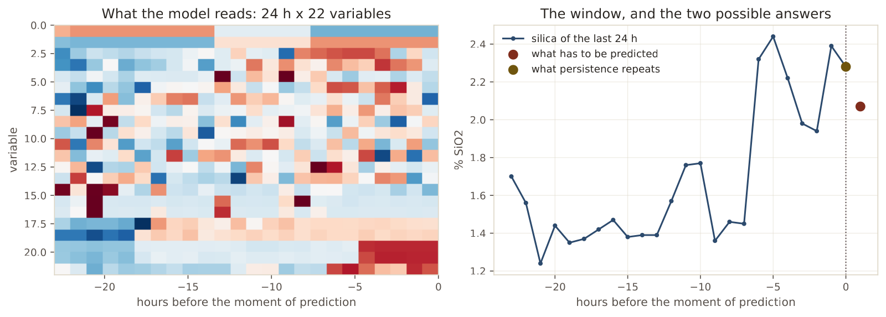
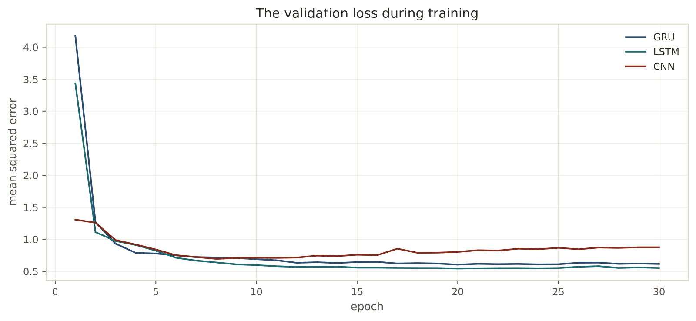
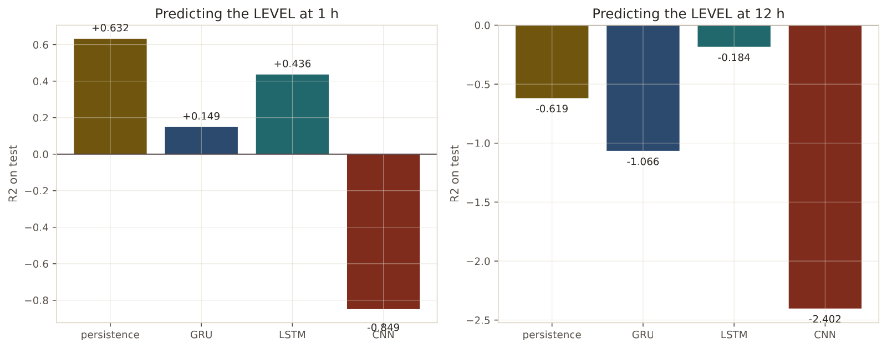
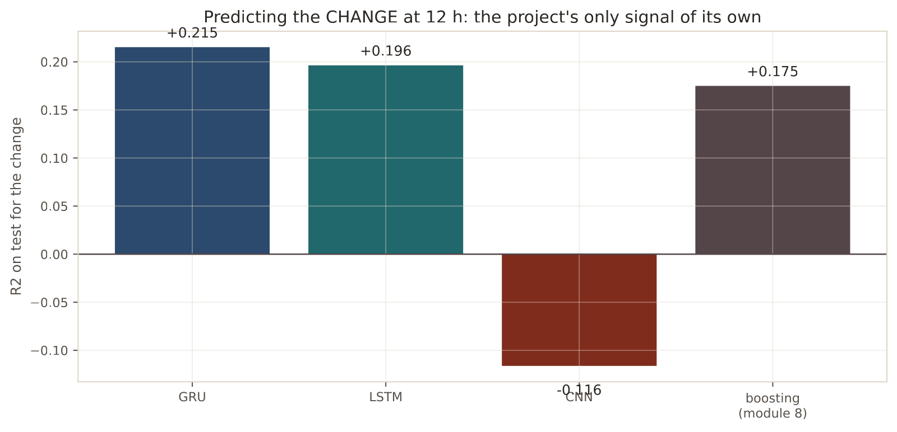

In 30 seconds
- +0.215. A GRU predicting the change at 12 hours. It is the highest own signal in the whole project, above the boosting's +0.175.
- At one hour they still do not win. The best of the three stays at 0.436 against persistence's 0.632.
- The causal convolution fails, with −0.849 at one hour and −2.402 at twelve. Not everything modern works.
- The verdict holds. No combination becomes deployable, not even the best one.
- Mind the March gap. A 24-hour window can skip thirteen days if nobody checks.
What this module solves
The original project stopped at a simple neural network, and never treated its data as what they are: a sequence.
All the previous models saw an hour as an independent row. The past got in as contraband, in four lag columns made by hand. A sequence model reads the whole window and can find patterns nobody thought of building as a column.
Here the three serious candidates are tried, on the GPU, and the verdict is put to the test again.
Before the theory: a toy example
Four hours. In hour 1 and hour 2 there is a spike of silica in the feed, and nothing afterwards.
| Hour | 1 | 2 | 3 | 4 |
|---|---|---|---|---|
| Input spike | 2 | 4 | 0 | 0 |
Step 1. A model without memory
A model that sees one row at a time. In hour 4 its input is 0.
hour 4 -> input 0 -> the model knows nothingFor it, hour 4 is identical to any quiet hour. The spike from two hours ago does not exist.
Step 2. A recurrent cell, with retention 0.5
A recurrent cell keeps a state and carries it along. The rule is a single line:
new state = previous state · 0.5 + inputStarting from zero:
| Hour | Input | Working | State |
|---|---|---|---|
| 1 | 2 | 0 · 0.5 + 2 | 2 |
| 2 | 4 | 2 · 0.5 + 4 | 5 |
| 3 | 0 | 5 · 0.5 + 0 | 2.5 |
| 4 | 0 | 2.5 · 0.5 + 0 | 1.25 |
In hour 4 the state is 1.25. The model does know there was a spike, even though its input for that hour is zero.
Step 3. Retention is the knob
With retention 0.9, the memory lasts a long time:
hour 1: 2 hour 2: 5.8 hour 3: 5.22 hour 4: 4.698With retention 0.1, it dies at once:
hour 1: 2 hour 2: 4.2 hour 3: 0.42 hour 4: 0.042Same input, three different memories. With 0.9, hour 4 still remembers almost everything. With 0.1 it has already forgotten.
Step 4. What GRU and LSTM add
In the example the retention is a fixed number we chose. In a GRU or an LSTM the retention is learned, and besides it depends on the input.
Those are the gates. At every hour, the cell decides how much of the past it keeps and how much of the new it takes in. It can cling to an important spike for hours and forget noise at once.
Step 5. What just happened
The lags of module 5 were a rigid version of this. sil_lag1, sil_lag2 and sil_lag3 are three fixed memories of one hour, two and three.
A recurrent cell is the flexible version: a memory of variable length, learned, over all the variables at once. If there is temporal structure the lags do not capture, it has to show up here.
Glossary
10 terms, in plain words
- Sequence. A series of observations in order, where the order matters.
- Window. The last N hours the model reads in one go. Here, 24.
- Hidden state. The summary of the past the cell carries from one hour to the next.
- Recurrent network. The one that processes the sequence hour by hour, updating its state. Short for RNN.
- Gate. The part of the cell that decides how much is remembered and how much is forgotten. In Spanish, compuerta.
- LSTM. Long short-term memory. Three gates and a separate memory channel.
- GRU. Gated recurrent unit. Simpler than an LSTM and often just as good.
- Vanishing gradient. The problem the gates solve: in a long sequence, the gradient gets so small that the first hours stop teaching anything.
- Causal convolution. A filter that only looks backwards in time, never forwards.
- Dilation. Spacing out the points the filter looks at, to reach more history with the same layers.
Step by step
Step 1. Put the data on a complete grid
The previous modules used hours already cleaned, without gaps. Here that will not do.
When the empty hours are removed, the ones on either side of the thirteen-day gap end up stuck together. A 24-hour window built on that grid would jump from March to April without warning. The grid is left complete, with the gaps as empties.
Step 2. Emit only contiguous windows
A window is accepted when its 24 hours really exist, and so does the hour to be predicted. It is a three-line check, and without it the model learns from invented time jumps.
Step 3. Scale with the training windows
As in module 4. The mean and the deviation come from the training set only.
Step 4. Train the three candidates
GRU and LSTM are recurrent. The causal convolution is the alternative: instead of walking the sequence, it applies filters that only look backwards.
Step 5. Ask both questions
Level and change, as in module 8. With the addition that here the model has real temporal information.
The code, in parts
Step 1. Build contiguous windows
complete = ~np.isnan(values).any(axis=1)
for end in range(WINDOW - 1, len(frame) - lead):
start = end - WINDOW + 1
if not complete[start:end + 1].all() or np.isnan(target[end + lead]):
continue
stacks.append(values[start:end + 1])line by line, 4 entries
np.isnan(values).any(axis=1)- Marks every hour that has any missing value. The tilde inverts it, so
completemarks the good hours. complete[start:end + 1].all()- Demands that the 24 hours of the window exist. It is the line that stops the March gap from being skipped.
continue- Jumps to the next turn of the loop without running the rest.
values[start:end + 1]- The piece of the table that forms the window. In Python the end of a range is not included, hence the plus one.
Dispositivo: cuda · torch 2.12.0.dev20260408+cu128
Rejilla horaria completa: 4415 horas · 21 variables
Ventana de 24 h · corte 2017-08-01From 4,415 grid hours come 3,089 training windows and 960 test windows. The missing ones are those that touched the gap.

Step 2. The recurrent cell, in code
class Recurrent(nn.Module):
def __init__(self, inputs, hidden=64, kind="gru"):
super().__init__()
cell = nn.GRU if kind == "gru" else nn.LSTM
self.rnn = cell(inputs, hidden, num_layers=1, batch_first=True)
self.head = nn.Linear(hidden, 1)
def forward(self, x):
output, _ = self.rnn(x)
return self.head(output[:, -1, :]).squeeze(-1)line by line, 6 entries
class Recurrent(nn.Module)- In PyTorch a model is a class that inherits from
nn.Module. Its layers live there. super().__init__()- Calls the parent class's constructor. Without it PyTorch does not register the layers.
nn.GRU(inputs, hidden)- The recurrent cell.
hidden=64is the size of the state it carries. batch_first=True- Tells it the data arrive as (batch, time, variables). Without it, it expects time first.
forward(self, x)- What happens when data pass through the model. It is the method PyTorch calls.
output[:, -1, :]- Of the whole output sequence, only the last instant. The summary of the 24 hours is there.
=== horizonte 1 h · 3089 ventanas de entrenamiento, 960 de prueba
persistencia R2 +0.6323
GRU nivel R2 +0.1487 aporte -0.4836 (11 s)
LSTM nivel R2 +0.4364 aporte -0.1959 (5 s)
CNN nivel R2 -0.8487 aporte -1.4810 (4 s)
Step 3. The causal convolution, the alternative to recurrence
for dilation in (1, 2, 4):
layers += [nn.Conv1d(previous, channels, kernel_size=3, dilation=dilation),
nn.ReLU()]line by line, 4 entries
nn.Conv1d- Convolution in one dimension, which here is time.
kernel_size=3- Each filter looks at three instants at once.
dilation=1, 2, 4- The spacing between the instants it looks at. Doubling it, three layers reach 15 hours back with very few parameters.
nn.ReLU()- The same activation as module 10: lets the positive through and cuts the negative.
=== horizonte 12 h · 3067 ventanas de entrenamiento, 960 de prueba
persistencia R2 -0.6187
GRU nivel R2 -1.0659 aporte -0.4472 (4 s)
GRU cambio R2 +0.2153 sumado al ultimo valor: -0.2702
LSTM nivel R2 -0.1835 aporte +0.4352 (3 s)
LSTM cambio R2 +0.1963 sumado al ultimo valor: -0.3009
CNN nivel R2 -2.4020 aporte -1.7833 (3 s)
CNN cambio R2 -0.1162 sumado al ultimo valor: -0.8068The result, measured
What we expected. That the sequence models would improve at one hour, because they read 24 whole hours instead of four lags.
What came out. The opposite at one hour, and something interesting at twelve.
At one hour, none comes close
| Model | Level R² | Contribution over persistence |
|---|---|---|
| Persistence | 0.632 | reference |
| LSTM | 0.436 | −0.196 |
| GRU | 0.149 | −0.484 |
| Causal convolution | −0.849 | −1.481 |

The best loses by two tenths. And that with access to far more information than the four lags of module 5, which reached 0.641.
The explanation is the usual one, seen from another angle. At one hour, the answer is already in the last value. A model with 64 hidden states has to learn to copy that value, and learning to copy with 3,089 examples works out worse than copying directly.
At twelve hours the signal appears
| Model | Change R² |
|---|---|
| GRU | +0.215 |
| LSTM | +0.196 |
| Boosting, module 8 | +0.175 |
| Causal convolution | −0.116 |

The GRU reaches +0.215 predicting the change at 12 hours, above the +0.175 the boosting had achieved. It is a real improvement, and it comes from treating the sequence as a sequence.
The LSTM on the level also beats persistence at 12 hours, −0.184 against −0.619. It is the only time a model beats it on the level, although both remain below predicting the mean.
What it means. That Kevin was half right to suspect the verdict. A better model does capture more: the own signal rises from 0.175 to 0.215, 23% more.
And the verdict still stands. Adding that change to the last known value, the result at 12 hours is −0.270. That improves on the boosting's −0.330 and on persistence's −0.619. And it is still worse than having no model.
The causal convolution, a failure that also informs
−0.849 at one hour and −2.402 at twelve. It is the worst model in the whole project, below even the neural network of module 10.
It is not to be hidden. Causal convolutions work very well on series with repeated local patterns, such as audio. Here the useful signal is almost entirely in the last value, and a filter that averages three instants with dilation spreads it out instead of exploiting it.
That a technique is modern does not make it appropriate.
What this module leaves open
The project has tried trees, lines, boosting, dense networks and sequence networks. It has never tried what a time-series engineer would have done first: check stationarity, difference, and run a classical baseline.
Module 12 does it, with SARIMAX.
Watch out
- The grid is left with its gaps. If the empty hours are removed, a 24-hour window can skip thirteen days without warning. The contiguity check costs three lines.
- More information is not a better result. The sequence models read 24 hours by 22 variables and lose to copying one number.
- Learning to copy is hard. A model with 64 hidden states needs many examples to reproduce what persistence does for free.
- The scaling is computed on the training windows. As in module 4, with the aggravation that here each value appears in 24 different windows.
- The validation for early stopping comes from the end of the training set, not from a random piece. In time series, a random piece is a leak.
- A resounding failure is reported too. The causal convolution gives −2.402 and that goes in the table.
Metallurgical bridge
A sequence model is an operator who has been on for the whole shift, as opposed to one who has just walked in and only sees the current screen. The one who has been on all shift remembers the silica spike of three hours ago, and knows the circuit is still digesting it.
The gate is the judgement to decide what to remember. A good operator forgets a sensor's noise and remembers an ore change for hours. A GRU learns that judgement from the data, instead of having it set for it.
And the result has its plant version. However good the operator is, if the question is "how much silica is there right now" and the laboratory reported an hour ago, the assay beats experience. Experience starts to count when twelve hours have to be anticipated, and that is exactly what the +0.215 says.
Review
What does a sequence model do that the lags of module 5 did not?
The lags are three fixed memories: one hour, two and three, and only of the target.
A recurrent cell carries a state and updates it every hour. Its retention is learned from the data, and besides it can depend on what is coming in. All of that over the 22 variables at once, not only over the silica. It is the flexible version of the same idea: memory of variable length instead of three snapshots of the past.
The GRU reads 24 hours by 22 variables and loses to repeating a number. How is that explained?
Because one hour ahead the answer is almost entirely in that number, and the model has to learn to copy it.
Persistence learns nothing: it takes the laboratory's last value and repeats it. The GRU has 64 hidden states and thousands of weights. With 3,089 training windows, it has to discover on its own a single thing: the best move is to reproduce one of its inputs. Learning to copy is a problem that is easy to state and hard to solve with little data. That is why the LSTM stays at 0.436 against 0.632.
The GRU on the change at 12 hours gives +0.215. Why is it the important number of the module?
Because it is signal no baseline can have, and it is the highest the project has achieved.
Persistence predicts zero change by definition, so its R² on the change is zero. Everything a model achieves there is its own merit. The boosting of module 8 reached +0.175 and the GRU reaches +0.215, 23% more, just by treating the sequence as a sequence. It confirms that there was something the tabular models were not seeing.
So, does the verdict change?
No, but it gets qualified, and both parts have to be said.
The part that changes: a better model does capture more signal. The part that does not: adding that change to the last known value, the result at 12 hours is −0.270. It is still worse than predicting the mean. A negative R² does not get deployed however much it has improved. The conclusion is still not to deploy, with a new note: if one day there are more data, sequence models are where to start.
The causal convolution gives −2.402. Is it reported or discarded?
It is reported, and with the explanation of why it failed.
Discarding the bad results is how a misleading report gets built. Causal convolutions work when the series has repeated local patterns, as in audio or text. Here almost all the useful information is concentrated in the last value, and a filter of size three with dilation averages that value with its neighbours instead of isolating it. It is the wrong model for this signal, and knowing that has value for the next project.